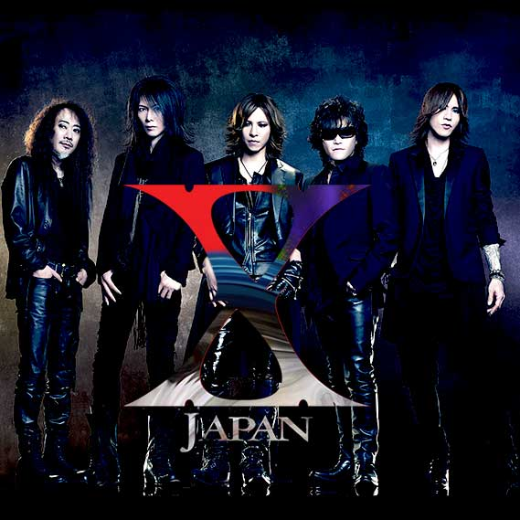

Music in Japanese
ประวัติและความเป็นมาคล่าวๆของแนวเพลงญี่ปุ่นและประของศิลปินตัวอย่าง
Music in Japanese
เจป็อป (J-Pop)
ซิตี้ป็อป (City Pop)
เจร็อก (J-Rock)
เพลงอนิเมะ (Anime Music)
เจป็อป (J-Pop)
เจป็อป (J-Pop)ย่อมาจาก "Japanese Popular Music" เป็นแนวดนตรีที่ได้รับความนิยมในญี่ปุ่นและทั่วโลก มีลักษณะเป็นเพลงป็อปที่ผสมผสานดนตรีตะวันตก เช่น ร็อก, แดนซ์, ฮิปฮอป, และโซล
ซิตี้ป็อป (City Pop)
ซิตี้ป็อป (City Pop) เป็นแนวดนตรีที่ได้รับความนิยมในช่วงยุค 1970s และ 1980s โดยมีลักษณะเป็นเพลงป็อปที่มีความหลากหลายทางดนตรี เช่น ดิสโก้, ฟังก์, แจ๊ส, อาร์แอนด์บี, และอิเล็กทรอนิกส์
เจร็อก (J-Rock) เป็นแนวดนตรีร็อกในญี่ปุ่นก็มีความหลากหลาย ทั้งร็อกแบบดั้งเดิม, โพสต์ร็อก, และอินดี้ร็อก

เจร็อก (J-Rock)
เพลงอนิเมะ (Anime Music) เป็นเพลงประกอบอนิเมะหรือเพลงประกอบภาพยนตร์อนิเมชั่นก็เป็นส่วนสำคัญของวงการเพลงญี่ปุ่น โดยมีศิลปินและวงดนตรีมากมายที่สร้างสรรค์เพลงสำหรับอนิเมะ
เพลงอนิเมะ (Anime Music)